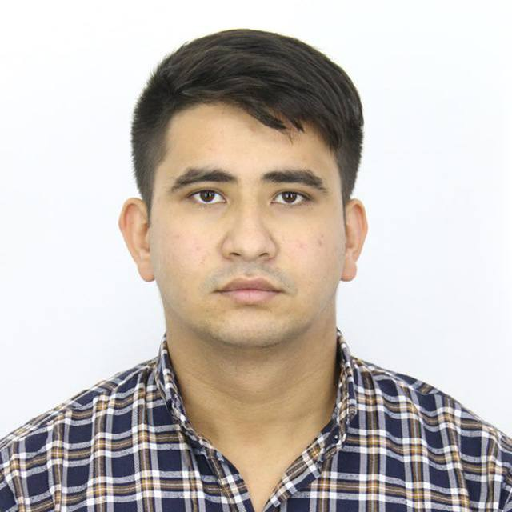

Работаю на стыке между вендором, поставщиками, внутренними ИТ-командами банка и руководством. Управляю проектами по цифровой трансформации банка: внедрение AI-решений (голосовые помощники, аналитика клиентского опыта), оптимизация кредитного конвейера и бэк-офисных процессов. Веду полный жизненный цикл проектов: от сбора требований до внедрения и пост-релиза. Готовлю проектную документацию (уставы, планы, отчёты), аналитические сводки для C-level, провожу презентации стейкхолдерам. Упрощаю и реинжиниринг бизнес-процессов: автоматизация рутинных операций, сокращение времени согласований на 25%. Выступаю связующим звеном между бизнес-заказчиками и техническими командами, разрешаю конфликты приоритетов и управляю рисками интеграции.
Реализовал комплексные проекты по интеграции новых серверов, систем хранения данных (СХД) и сетевого оборудования в банковскую инфраструктуру. Провёл детальный анализ существующей ИТ-инфраструктуры, выявил узкие места и сформировал план модернизации. Руководил процессами планирования, внедрения и пуско-наладки устройств (Cisco, Dell EMC, HP). Обеспечил бесшовную интеграцию с существующими системами мониторинга и резервного копирования. Выступал связующим звеном между бизнес-подразделениями и инженерными командами: переводил бизнес-требования в технические спецификации, согласовывал сроки и ресурсы.
Разрабатываю и деплою веб-платформы под ключ. Архитектура: React SPA, Django REST, PostgreSQL, контейнеризация Docker, CI/CD через GitHub Actions. Настройка VPS (Ubuntu, Nginx, SSL). Реализовал систему лендингов с админ-панелью для малого бизнеса. Активно использую современные практики (TypeScript, Tailwind, DRF).
Осуществляю полный цикл настройки и поддержки ИТ-инфраструктуры для малого и среднего бизнеса, а также банковских подразделений. Виртуализация и серверная среда: развёртывание и обслуживание виртуальных машин (VMware ESXi, Proxmox VE), миграция физических серверов в виртуальную среду, обеспечение отказоустойчивости кластеров. Резервное копирование и отказоустойчивость: проектирование и внедрение системы бэкапов (Veeam, Bacula, rsync), построение отказоустойчивой архитектуры (RAID, репликация, резервные каналы). Мониторинг и наблюдение: настройка систем мониторинга состояния серверов и сетевых устройств (Zabbix, Prometheus+Grafana, Checkmk) с отправкой алертов в Telegram/Slack. Сеть и безопасность: проектирование и настройка сетевых соединений, межсетевых экранов (firewalld, iptables, pfSense), маршрутизация VLAN, построение VPN-туннелей (OpenVPN, WireGuard, IPsec). Работа с оборудованием MikroTik (RouterOS), Cisco (IOS), а также Linux-маршрутизаторами. Поддержка и сопровождение: обеспечение бесперебойной работы ИТ-инфраструктуры заказчиков 24/7, плановое обновление ПО и ОС, аудит безопасности, консультирование по вопросам масштабирования.
Разработана бэкенд-часть на Django REST Framework с реализацией API в рамках микросервисной архитектуры. Создана клиентская веб-часть для конечных пользователей и удобная административная панель для управления данными. Обеспечен полный цикл деплоя и тестирования: инфраструктура развёрнута в Docker-контейнерах, настроены мониторинг (Prometheus + Grafana) и автоматическое резервное копирование (Veeam, rsync) с регламентом восстановления. Результат — централизованная платформа для учёта и контроля опасных химических веществ.
Выполнена адаптивная вёрстка многостраничного сайта-визитки для медицинского специалиста (ЛОР-врача). Проведена полная подготовка к запуску: размещение на хостинге, регистрация домена, настройка SSL-сертификата и почтовых уведомлений. Интегрирована форма обратной связи с отправкой заявок на электронную почту. Сайт оптимизирован для поисковых систем (SEO-базовые настройки) и корректно отображается на всех типах устройств.
Спроектирована и разработана полнофункциональная платформа для B2B-компании — поставщика промышленной электроники. Реализованы бэкенд на Django REST Framework и фронтенд на React с каталогами товаров, сложной фильтрацией и пагинацией. Разработана административная панель для управления ассортиментом, ценами, остатками и заказами. Настроена система авторизации с разграничением ролей (клиент / менеджер). Выполнен деплой на VPS с использованием Docker + CI/CD (GitHub Actions).
Выполнена комплексная модернизация ИТ-инфраструктуры крупного национального банка. Произведена замена устаревшего сетевого оборудования на современные решения Cisco / MikroTik, осуществлена миграция серверного парка и систем хранения данных (СХД) на высокопроизводительные кластеры VMware ESXi + Dell EMC. Внедрены фирменные системы мониторинга (Zabbix, Prometheus + Grafana) и комплексной информационной безопасности (межсетевые экраны, резервное копирование по принципу 3-2-1). Обеспечена отказоустойчивость критических сервисов и соответствие требованиям регулятора (Фин CERT, PCI DSS). Результат — повышение доступности инфраструктуры до 99,98% и снижение времени восстановления (RTO) на 40%.